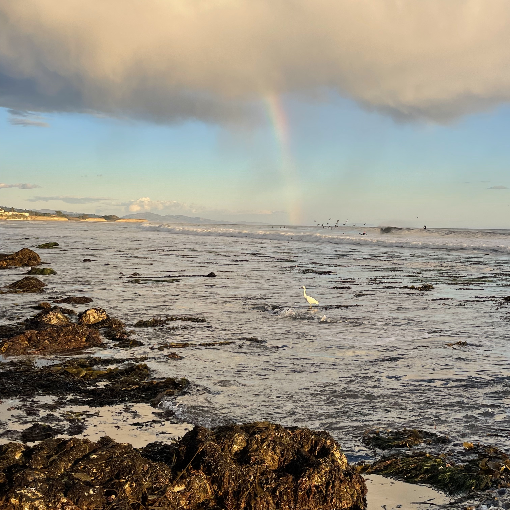
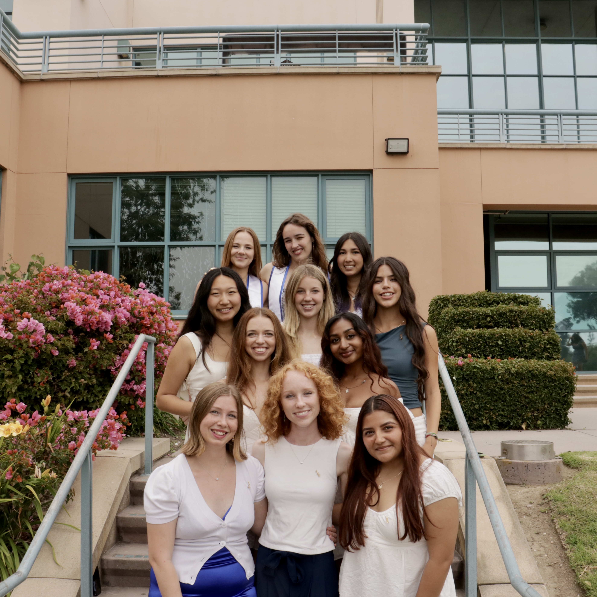
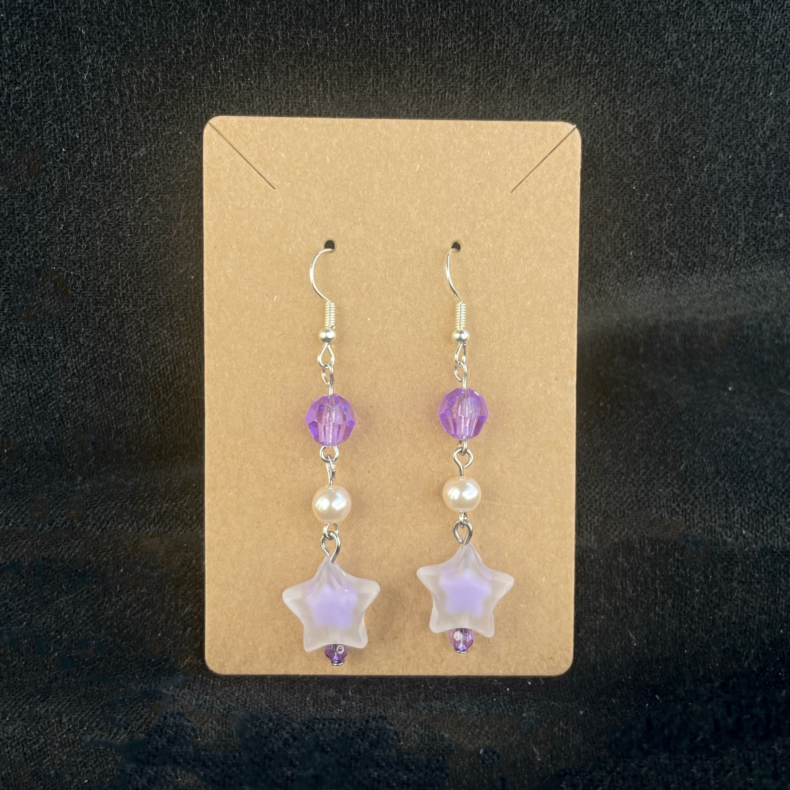

Biosketch

I am a rising senior at the University of California Santa Barbara, where I am double majoring in Earth Science and Data Science. I am interested in the intersection between the two fields and using modeling to characterize the Earth system, especially in topics of ocean biogeochemistry, atmospheric chemistry and carbon in the climate system. This summer, I am working with Dr. Arlene Fiore on analyzing various simulations of an idealized climate model to determine the effects of biogenic and anthropogenic VOCs on methane and ozone in the troposphere At UCSB, I work with Dr. Morgan Raven, investigating the sulfurization of organic matter in anoxic conditions and its potential as a carbon dioxide removal (CDR) strategy. I am passionate about uplifting women in technical fields and is a part of Alpha Sigma Kappa, a sorority for women in STEM. I hope to continue making a positive difference on Earth’s future as I work toward a graduate degree.
Below you can find links to some organizations I am a part of.

AS Coastal Fund
The UCSB Associated Students Coastal Fund is a funding organization on campus that supports local coastal projects. Funded by student fees, CF prioritizes projects that have direct student engagement. We have funded projects ranging from environmental education, restoration projects and undergraduate + graduate research. I am currently the Outreach and Education Coordinator for the administrative staff and I am in charge of the Instagram, Newsletter and Year-End Annual Shell-ebration.

Alpha Sigma Kappa
Alpha Sigma Kappa - Women in Technical Studies is a sorority for women and non-binary students in STEM. We are a part of the professional fraternity council (PFC) at UCSB. I served as the VP of Operations for the 2024-2025 school year.

Past Times
In my free time, I like to sew and make earrings! I sometimes post my projects online or gift them to my friends and family. I also like to go to the beach in Santa Barbara, rock climb, and cafe-hop.